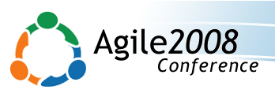
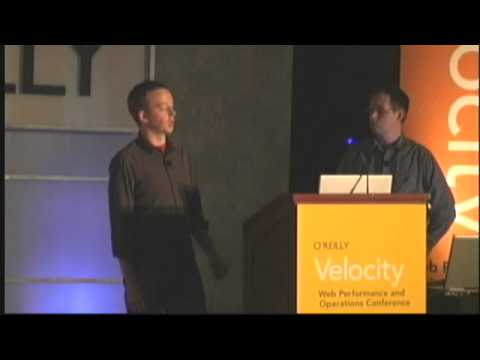
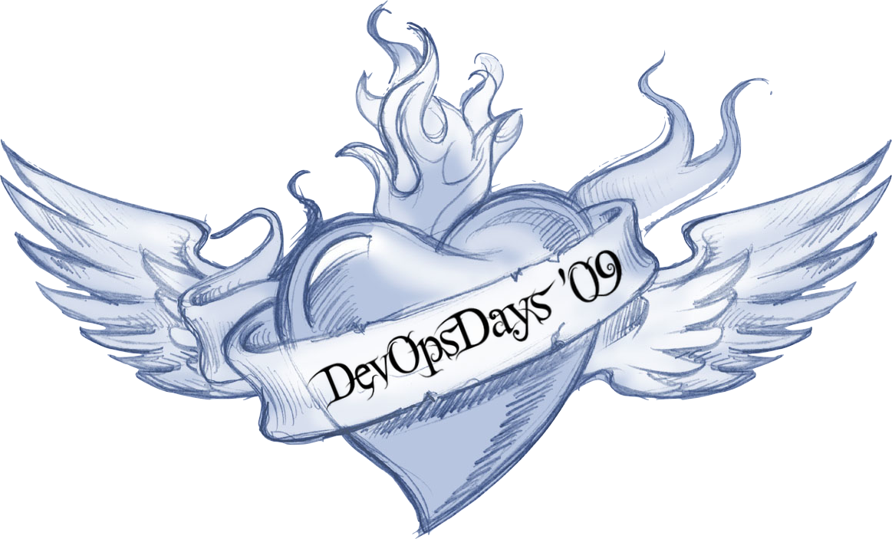
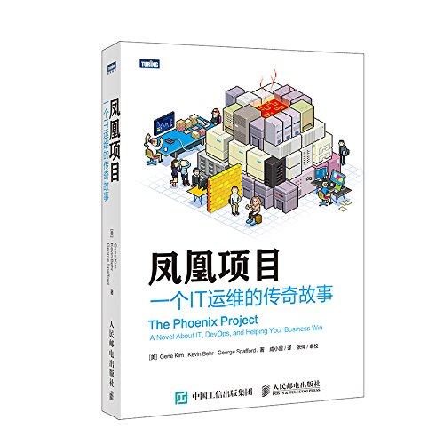

当想更深入的理解一件事物时，我们可能需要去看看这个事物的前世今生。本文只是简单地梳理了DevOps的历史。
历史
2007年，比利时
2007 年，Patrick Debois 受比利时政府部门的委托，协助数据中心迁移。在项目中他的角色是certification/readiness testing。因此，他需要跨开发团队和运维团队工作。这两个团队存在一堵隔离墙，采用了不同的工作方式，这使得在两个团队之间来回切换的Debois非常沮丧。
2008年8月，加拿大多伦多，Agile Conference 2008
2008年8月，在加拿大多伦多的 Agile Conference 2008（敏捷大会）上， Andrew Shafer 提交了一个名为“Agile Infrastructure”的临时话题。只有一个人出席了，这个人就是Patrick Debois。Andrew 和 Patrick 讨论和分享他们对“agile systems administration.”的想法和观点。并在 Google Group 上建立了一个 Agile System Adminstration 的讨论组继续这个话题。

2009年6月，美国圣荷西，第二届 Velocity 大会
2009年6月，两名 Flickr 员工 John Allspaw 和 Paul Hammond 分享了一个名为“10+ Deploys Per Day: Dev and Ops Cooperation at Flickr”的演讲。这个演讲的内容可以作为 DevOps 萌发的标志。他们认为，唯一合理的前进道路是使应用开发和运维无缝、透明和完全集成。
Patrick Debois 在网上看了这个视频后，他受到启发，以及其他人的鼓励下在比利时举办了“DevOpsDays“

2009年10月，比利时根特，DevOpsDays
Patrick Debois 模仿Velocity 大会在比利时举办了一个为期两天的”DevOpsDays”。人们从世界各地蜂拥而至，除了开发工程师和运维工程师，还有各种IT管理人员和工具爱好者。两天的会议已经结束后，参与 DevOpsDays 的人们把这次会议的内容带回到了世界各个角落。于是， DevOps 这个称谓正式诞生。

2010年， 德国汉堡，DevOpsDays
2010 年，在德国汉堡举办了第二届DevOpsDays大会，《持续交付》的作者Jez Humble做了 “持续交付”的演讲。《持续交付》中所提到的实践给 Patrick 和 Andrew 最初所遇到的问题给出了最佳实践。
2013年，凤凰项目
由Gene Kim，Kevin Behr，George Spafford共同完成《凤凰项目》发布。这是DevOps的一个标志性事件。

延伸阅读
- 10+ Deploys Per Day: Dev and Ops Cooperation at Flickr 演讲视频：https://www.bilibili.com/video/BV16K4y1S7Re
- DevOpsDays：https://devopsdays.org